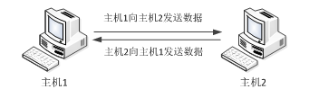
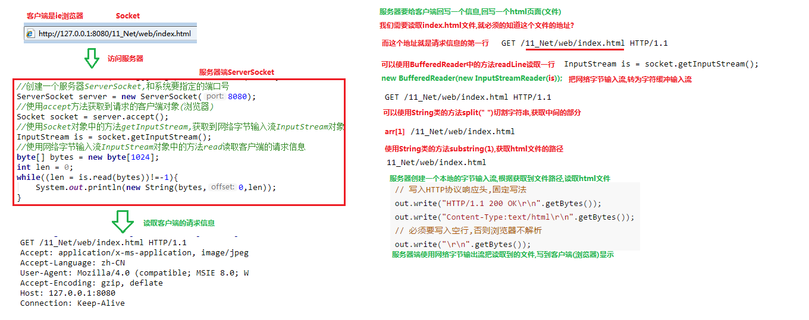

一、网络编程基础
- 软件结构
- C/S结构：全称为Client/Server结构，是指客户端和服务端结构。比如QQ,迅雷等软件
- B/S结构全称为Browser/Server结构，是指浏览器和服务器结构，常见浏览器有谷歌、火狐等
- 注：网络编程，就是在一定的协议下，实现两台计算机的通信的程序
- 网络通信协议
- 网络通信协议：通过计算机网络可以使多台计算机实现连接，位于同一个网络中的计算机在进行连接和通信时要遵守一定的规则，这些连接和通信的规则被称为网络通信协议，它对数据的传输格式、传输速率、传输步骤等做了统一规定，通信双方必须同时遵守才能完成数据交换
- TCP/IP协议：传输控制协议/因特网互联协议，是Internet最基本、最广泛的协议。它定义了计算机如何连入因特网，以及数据如何在它们之间传输的标准。它内部包含了一系列的用于处理数据通信的协议，并采用了4层的分层模型，每一层都呼叫它的下一层所提供的协议来完成自己的需求
- TCP/IP协议中的四层分别是应用层、传输层、网络层和链路层，每层负责不同的通信功能

- 链路层：链路层是用于定义物理传输通道，通常是对某些网络连接设备的驱动协议，例如针对光纤、网线提供的驱动
- 网络层：网络层是整个TCP/IP协议的核心，它主要用于将传输的数据进行分组，将分组数据发送到目标计算机或者网络
- 传输层：主要使网络程序进行通信，在进行网络通信时，可以采用TCP协议，也可以采用UDP协议。
- 应用层：主要负责应用程序的协议，例如HTTP协议、FTP协议
- 协议分类（Java.net包中提供了两种常见的网络协议的支持）
- UDP
- 概念：用户数据包协议（User Datagram Protocol）。UDP是无连接通信协议，即在数据传输时，数据的发送端和接收端不建立逻辑连接。
- 特点：数据被限制在64kb以内，超出这个范围就不能发送了
- 数据报：网络传输的基本单位
- 
- TCP
- 概念：传输控制协议 (Transmission Control Protocol)。TCP协议是面向连接的通信协议，即传输数据之前，在发送端和接收端建立逻辑连接，然后再传输数据，它提供了两台计算机之间可靠无差错的数据传输
- 在TCP连接中必须要明确客户端与服务器端，由于客户端向服务端发出连接请求，每次连接的创建都需要经过“三次握手”
- 三次握手：TCP协议中，在发送数据的准备阶段，客户端与服务器之间的三次交互，以保证连接的可靠
- 第一次握手：客户端向服务器端发出连接请求，等待服务器确认
- 第二次握手：服务器端向客户端会送一个响应，通知客户端收到了连接请求
- 第三次握手：客户端再次向服务器端发送确认信息，确认连接。
- 完成三次握手，连接建立后，客户端和服务器就可以开始进行数据传输了，由于这种面向连接的特性，TCP协议可以保证传输数据的安全。

- 网络编程三要素
- 协议：计算机网络通信必须遵守的规则
- IP地址：
- 概念：指互联网协议地址(Internet Protocol Address),俗称IP。IP地址用来给一个网络中的计算机设备做唯一的编号。
- 分类：
- IPv4:是一个32位的二进制数，通常被分为4个字节，表示成a.b.c.d的形式，每个字母表示0~255之间的十进制数，那么最多可以表示42亿个
- IPv6:为了扩大地址空间，拟通过IPv6重新定义地址空间，采用128位地址长度，每16个字节一组，分成8组十六进制数，表示成 `ABCD:EF01:2345:6789:ABCD:EF01:2345:6789`。
- 常用命令：
- ipconfig:查看本机IP地址
- ping 空格 IP地址：检查网络是否连通
- 特殊的IP地址：本机IP地址：127.0.0.1、localhost
- 端口号
- 端口号可以唯一标识设备中的进程（应用程序）
- 概念：用两个字节表示的整数，它的取值范围是0~65535。其中0~1023之间的端口号用于一些知名的网络服务和应用，普通的应用程序需要使用1024以上的端口号。
- 利用协议 + IP地址 + 端口号三元组合，就可以标识网络中的进程了，那么进程间的通信就可以利用这个标识与其它进程进行交互
- MySQL：3306,
- oracle:1521,
- tomcat:8080
二、TCP通信程序

- 概述：TCP通信能实现两台计算机之间的数据交互，通信的两端，要严格区分为客户端（Client）与服务端（Server），底层是基于IO字节流实现
- 两端通信的步骤：
- 服务端程序，要先启动，等待客户端的连接
- 客户端主动连接服务器端，连接成功才能通信，服务端不可以主动连接客户端
- 在Java中，提供了两个类用于实现TCP通信程序
- 客户端：java.net.Socket类表示。创建Socket对象，向服务端发出连接请求，服务端响应请求，两者建立连接开始通信
- 服务端：java.net.ServerSocket类表示，创建ServerSocket对象，相当于开启一个服务，并等待客户端的连接
- Socket类
- 概述：该类实现客户端套接字，套接字指的是两台设备之间通讯的端点（数据接收的码头）
- 构造方法：
- public Socket(String host,int port):创建套接字对象并将其连接到指定主机上的指定端口号，如果指定的host是null，则相当于指定地址为回送地址
- 回送地址（127.x.x.x）是本机回送地址，主要用于网络软件测试以及本地机进程间通信，无论什么程序，一旦使用回送地址发送数据，立即返回，不进行任何网络传输
- 示例：Socket client = new Socket("127.0.0.1",6666);
- 成员方法：
- public InputStream getInputStream():返回此套接字的出入流
- 如果此Socket具有相关的通道，则生成的InputStream的所有操作也关联该通道
- 关闭生成InputStream也将关闭相关的Socket
- public OutputStream getOutputStream():返回此套接字的输出流
- 如果此Scoket具有相关联的通道，则生成的OutputStream 的所有操作也关联该通道
- 关闭生成的OutputStream也将关闭相关的Socket。
- public void close() ：关闭此套接字。
- 一旦一个socket被关闭，它不可再使用。
- 关闭此socket也将关闭相关的InputStream和OutputStream 。
- public void shutdownOutput() ： 禁用此套接字的输出流。
- 任何先前写出的数据将被发送，随后终止输出流。
- 注意：
- 客户端和服务器端进行交互，必须使用Socket中提供的网络流，不能使用自己创建的对象流
- 当我们创见客户端对象Socket的时候，就会失去请求服务器和服务器经过3次握手建立连接通路，如果服务器没有启动就抛出异常，如果服务器已经启动了，那就可以进行交互了
- ServerSocket类
- 概述：这个类实现了服务器套接字，该对象等待通过网络的请求
- 构造方法：
- public ServerSocket(int port) ：使用该构造方法在创建ServerSocket对象时，就可以将其绑定到一个指定的端口号上，参数port就是端口号。
- 示例：ServerSocket server = new ServerSocket(6666);
- 成员方法：
- public Socket accept() ：侦听并接受连接，返回一个新的Socket对象，用于和客户端实现通信。该方法会一直阻塞直到建立连接。
- 简单的TCP网络程序
- 【服务端】启动,创建ServerSocket对象，等待连接。
- 【客户端】启动,创建Socket对象，请求连接。
- 【服务端】接收连接,调用accept方法，并返回一个Socket对象。
- 【客户端】Socket对象，获取OutputStream，向服务端写出数据。
- 【服务端】Scoket对象，获取InputStream，读取客户端发送的数据。
- 至此，服务端向客户端回写数据

- 【服务端】Socket对象，获取OutputStream，向客户端回写数据。
- 【客户端】Scoket对象，获取InputStream，解析回写数据。
- 【客户端】释放资源，断开连接。

三、综合案例
shutdownOutput()方法是结束的Socket对象，将文件末尾-1标识符传给服务端。
- 文件上传
- 【客户端】输入流，从硬盘读取文件数据到程序中。
- 【客户端】输出流，写出文件数据到服务端。
- 【服务端】输入流，读取文件数据到服务端程序。
- 【服务端】输出流，写出文件数据到服务器硬盘中。

- 文件上传优化分析
- 文件名写死问题：保存文件名称如果写死，导致服务器硬盘，只会保留一个文件，建议使用系统时间优化，保证文件名称唯一
FileOutputStream fis = new FileOutputStream(System.currentTimeMillis()+".jpg") // 文件名称
BufferedOutputStream bos = new BufferedOutputStream(fis);
- 循环接收问题：服务端，指保存一个文件就关闭了，之后的用户无法再上传，这是不符合实际的，使用循环改进，可以不断的接收不同用户的文件
// 每次接收新的连接,创建一个Socket
while（true）{
Socket accept = serverSocket.accept();
......
}
1. 效率问题 服务端，在接收大文件时，可能耗费几秒钟的时间，此时不能接收其他用户上传，所以，使用多线程技术优化，
while（true）{
Socket accept = serverSocket.accept();
// accept 交给子线程处理.
new Thread(() -> {
......
InputStream bis = accept.getInputStream();
......
}).start();
}
3. 信息回写分析
- 【服务端】获取输出流，回写数据。
- 【客户端】获取输入流，解析回写数据。

4.模拟B/S服务器（扩展知识点）
